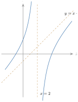
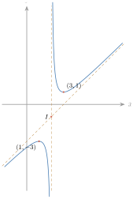
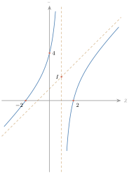
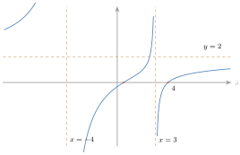
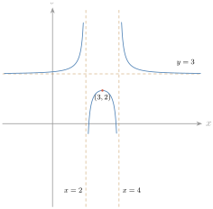
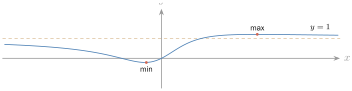
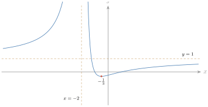
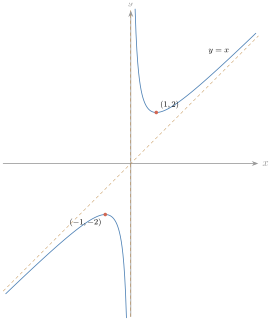

ជំពូកទី 4 សិក្សាអថេរភាពនិងសង់ក្រាប នៅក្នុងជំពូកនេះ គេនឹងសិក្សាអំពីអថេរភាពនិងក្រាបតាងអនុគមន៍សនិទាន អនុគមន៍អិចស្ប៉ូណង់ស្យែល និងអនុគមន៍លោការីត ។ បន្ទាប់ពីសិក្សាមេរៀនសិក្សាអថេរភាពនិងសង់ក្រាបអនុគមន៍សនិទាន អនុគមន៍អិចស្ប៉ូណង់ស្យែល និងអនុគមន៍លោការីត សិស្សអាចយកចំណេះដឹងនិងបំណិនទៅដោះស្រាយសមីការ ឬចំណោទបញ្ហាផ្សេងៗដែលទាក់ទងនឹងការប្រើប្រាស់ក្រាប ។
- រកអាស៊ីមតូតទ្រេតនៃក្រាបតាងអនុគមន៍សនិទាន
- សិក្សាអថេរភាពនិងសង់ក្រាបតាងអនុគមន៍សនិទាន
- ដោះស្រាយវិសមីការដោយប្រើក្រាប
- ពិភាក្សាអត្ថិភាពនិងសញ្ញាឫសនៃសមីការដឺក្រេទី \(\displaystyle 2\) មានប៉ារ៉ាម៉ែត្រដោយប្រើក្រាប ។
1. អនុគមន៍ y = (ax² + bx + c)/(px + q)
1.1. អាស៊ីមតូតទ្រេត
ឧទាហរណ៍ 1 : គេឱ្យអនុគមន៍ \(\displaystyle f(x) = x - 1 + \dfrac{-6}{x - 2}\) ដែលមានក្រាប \(\displaystyle C\) ។ បន្ទាត់មួយស្របនឹងអ័ក្សអរដោនេកាត់ក្រាប \(\displaystyle C\) ត្រង់ \(\displaystyle M\) និងកាត់បន្ទាត់ \(\displaystyle y = x - 1\) ត្រង់ \(\displaystyle H\) ដែល \(\displaystyle \overline{HM} = f(x) - (x - 1)\) ។ គេបាន \(\displaystyle [f(x) - (x - 1)] = \dfrac{-6}{x - 2}\) ។ គេសង្កេតឃើញថា \(\displaystyle \displaystyle\lim_{x \to +\infty}\dfrac{-6}{x - 2} = 0\) និង \(\displaystyle \displaystyle\lim_{x \to -\infty}\dfrac{-6}{x - 2} = 0\) ។ ដូច្នេះ \(\displaystyle \overline{HM}\) កាន់តែតូចទៅៗ ហើយខិតទៅជិត \(\displaystyle 0\) កាលណា \(\displaystyle x \to \pm\infty\) ។ គេថា ក្រាប \(\displaystyle C\) និងបន្ទាត់ \(\displaystyle y = x - 1\) ខិតទៅជិតគ្នាកាលណា \(\displaystyle x \to \pm\infty\) ។ បន្ទាត់នេះហៅថា អាស៊ីមតូតទ្រេត នៃក្រាបរបស់ \(\displaystyle f(x) = x - 1 - \dfrac{6}{x - 2}\) ។

ឧទាហរណ៍ 2 : អនុគមន៍ \(\displaystyle f(x) = \dfrac{x^2 - 3}{2x - 4}\) មានដឺក្រេនៃភាគយកធំជាងដឺក្រេនៃភាគបែងមួយដឺក្រេ ។ ដោយចែក \(\displaystyle x^2 - 3\) នឹង \(\displaystyle 2x - 4\) គេបាន \(\displaystyle f(x) = \dfrac{x^2 - 3}{2x - 4} = \dfrac x2 + 1 + \dfrac{1}{2x - 4}\) ហើយ \(\displaystyle f(x) - \left(\dfrac x2 + 1\right) = \dfrac{1}{2x - 4}\) ។ កាលណា \(\displaystyle x \to \pm\infty\) នោះ \(\displaystyle \dfrac{1}{2x - 4}\) ខិតទៅជិត \(\displaystyle 0\) ។ ដូច្នេះបន្ទាត់ដែលមានសមីការ \(\displaystyle y = \dfrac x2 + 1\) ខិតទៅជិតក្រាបនៃ \(\displaystyle f\) កាលណា \(\displaystyle x\) ខិតទៅរកអនន្ត ។ គេថាបន្ទាត់ \(\displaystyle y = \dfrac x2 + 1\) ជាអាស៊ីមតូតទ្រេតនៃក្រាបតាងអនុគមន៍ \(\displaystyle f\) ។
និយមន័យ បន្ទាត់ដែលមានសមីការ \(\displaystyle y = ax + b\) ជាអាស៊ីមតូតទ្រេតនៃក្រាបរបស់ \(\displaystyle f\) កាលណា \(\displaystyle \displaystyle\lim_{x \to +\infty}[f(x) - (ax + b)] = 0\) ឬ \(\displaystyle \displaystyle\lim_{x \to -\infty}[f(x) - (ax + b)] = 0\) ។
តាមនិយមន័យគេបាន \(\displaystyle f(x) - (ax + b) = \varepsilon(x)\) ដែល \(\displaystyle \displaystyle\lim_{x \to +\infty}\varepsilon(x) = 0\) ឬ \(\displaystyle \displaystyle\lim_{x \to -\infty}\varepsilon(x) = 0\) ។ គេសរសេរ \(\displaystyle \dfrac{f(x)}{x} - \dfrac{ax + b}{x} = \dfrac{\varepsilon(x)}{x}\) គឺ \(\displaystyle \dfrac{f(x)}{x} = a + \dfrac bx + \dfrac{\varepsilon(x)}{x} \to a\) កាលណា \(\displaystyle x\) ខិតជិតអនន្ត ។ ម្យ៉ាងទៀត \(\displaystyle f(x) - ax = b + \varepsilon(x) \to b\) កាលណា \(\displaystyle x\) ខិតជិតអនន្ត ។ ដូច្នេះ បើ \(\displaystyle \displaystyle\lim_{x \to \pm\infty}\dfrac{f(x)}{x} = a\) និង \(\displaystyle \displaystyle\lim_{x \to \pm\infty}[f(x) - ax] = b\) នោះបន្ទាត់មានសមីការ \(\displaystyle y = ax + b\) ជាអាស៊ីមតូតទ្រេតនៃក្រាបតាង \(\displaystyle f\) ។
រកអាស៊ីមតូតទ្រេតនៃក្រាបតាងអនុគមន៍ \(\displaystyle y = \dfrac{x^2 + 2x + 3}{x + 1}\) ។
ដើម្បីរកអាស៊ីមតូតទ្រេត គេចែក \(\displaystyle x^2 + 2x + 3\) និង \(\displaystyle x + 1\) ៖ \(\displaystyle y = \dfrac{x^2 + 2x + 3}{x + 1} = x + 1 + \dfrac{2}{x + 1}\) ; \(\displaystyle y - (x + 1) = \dfrac{2}{x + 1}\) ។ គេបាន \(\displaystyle \displaystyle\lim_{x \to \pm\infty}[y - (x + 1)] = \lim_{x \to \pm\infty}\dfrac{2}{x + 1} = 0\) ។ ដូច្នេះ តាមនិយមន័យ បន្ទាត់ \(\displaystyle y = x + 1\) ជាអាស៊ីមតូតទ្រេត ។
រកអាស៊ីមតូតទ្រេតនៃក្រាបតាងអនុគមន៍ខាងក្រោម ក្នុងករណី \(\displaystyle x\) ខិតទៅរក \(\displaystyle +\infty\), \(\displaystyle -\infty\) ៖ ក. \(\displaystyle f(x) = \dfrac{x^2 + 1}{x}\) ខ. \(\displaystyle g(x) = \dfrac{x^2 - 5x + 7}{x - 2}\) ។
មើលចម្លើយ
ក. \(\displaystyle y = x\) (\(\displaystyle f(x) = x + \dfrac1x\)) ។ ខ. \(\displaystyle y = x - 3\) (\(\displaystyle g(x) = x - 3 + \dfrac{1}{x - 2}\)) ។
1.2. សិក្សាអនុគមន៍ \(\displaystyle y = \dfrac{ax^2 + bx + c}{px + q}\)
ឧទាហរណ៍ 1 : សិក្សាអថេរភាពនិងសង់ក្រាបនៃអនុគមន៍ \(\displaystyle f(x) = \dfrac{x^2 - 5x + 7}{x - 2}\) ។
- ដែនកំណត់ \(\displaystyle D = \mathbb{R} - \{2\}\) ។
- សរសេរជារាងកាណូនិក \(\displaystyle f(x) = \dfrac{x^2 - 5x + 7}{x - 2} = x - 3 + \dfrac{1}{x - 2}\) ។
- ទិសដៅអថេរភាព ៖ ដេរីវេ \(\displaystyle f'(x) = \left(x - 3 + \dfrac{1}{x - 2}\right)' = 1 - \dfrac{1}{(x - 2)^2} = \dfrac{x^2 - 4x + 3}{(x - 2)^2}\) ។ ដោយ \(\displaystyle (x - 2)^2 > 0\) ចំពោះគ្រប់ \(\displaystyle x \in D\) នោះ \(\displaystyle f'(x)\) មានសញ្ញាដូច \(\displaystyle x^2 - 4x + 3\) ។ \(\displaystyle f'(x) = 0\) គេបាន \(\displaystyle x^2 - 4x + 3 = 0\) នាំឱ្យ \(\displaystyle x = 1\), \(\displaystyle x = 3\) ។
- សញ្ញានៃដេរីវេ ៖
| \(\displaystyle x\) | \(\displaystyle -\infty\) | \(\displaystyle 1\) | \(\displaystyle 2\) | \(\displaystyle 3\) | \(\displaystyle +\infty\) | ||||
| \(\displaystyle f'(x)\) | \(\displaystyle +\) | \(\displaystyle 0\) | \(\displaystyle -\) | \(\displaystyle \|\) | \(\displaystyle -\) | \(\displaystyle 0\) | \(\displaystyle +\) |
ដូច្នេះ \(\displaystyle f\) ជាអនុគមន៍កើនលើ \(\displaystyle (-\infty, 1) \cup (3, +\infty)\) និងចុះលើ \(\displaystyle (1, 2) \cup (2, 3)\) ។
- បរមាធៀប \(\displaystyle f\) ៖ ចំពោះ \(\displaystyle x = 1\) អនុគមន៍មានតម្លៃអតិបរមាធៀប \(\displaystyle f(1) = \dfrac{1 - 5 + 7}{1 - 2} = -3\) ; ចំពោះ \(\displaystyle x = 3\) អនុគមន៍មានតម្លៃអប្បបរមាធៀប \(\displaystyle f(3) = \dfrac{9 - 15 + 7}{3 - 2} = 1\) ។
- គណនាលីមីត ៖ \(\displaystyle \displaystyle\lim_{x \to +\infty}f(x) = +\infty\) ; \(\displaystyle \displaystyle\lim_{x \to -\infty}f(x) = -\infty\) ; \(\displaystyle \displaystyle\lim_{x \to 2^-}f(x) = \lim_{x \to 2^-}\dfrac{1}{x - 2} = -\infty\) ; \(\displaystyle \displaystyle\lim_{x \to 2^+}f(x) = +\infty\) ។
- អាស៊ីមតូត ៖ ដោយ \(\displaystyle \displaystyle\lim_{x \to 2}f(x) = \pm\infty\) នោះបន្ទាត់ \(\displaystyle x = 2\) ជាអាស៊ីមតូតឈរនៃក្រាប ។ ម្យ៉ាងទៀត \(\displaystyle \displaystyle\lim_{x \to \pm\infty}[f(x) - (x - 3)] = \lim\dfrac{1}{x - 2} = 0\) ដូច្នេះបន្ទាត់ \(\displaystyle y = x - 3\) ជាអាស៊ីមតូតទ្រេតនៃក្រាប ។
- តារាងអថេរភាព ៖
| \(\displaystyle x\) | \(\displaystyle -\infty\) | \(\displaystyle 1\) | \(\displaystyle 2\) | \(\displaystyle 3\) | \(\displaystyle +\infty\) | ||||
| \(\displaystyle f'(x)\) | \(\displaystyle +\) | \(\displaystyle 0\) | \(\displaystyle -\) | \(\displaystyle \|\) | \(\displaystyle -\) | \(\displaystyle 0\) | \(\displaystyle +\) | ||
| \(\displaystyle f(x)\) | \(\displaystyle -\infty\) | \(\displaystyle \nearrow\) | \(\displaystyle -3\) | \(\displaystyle \searrow\) | \(\displaystyle \begin{matrix}-\infty \\ \| \\ +\infty\end{matrix}\) | \(\displaystyle \searrow\) | \(\displaystyle 1\) | \(\displaystyle \nearrow\) | \(\displaystyle +\infty\) |
- សំណង់ក្រាប ៖ ចំណុចប្រសព្វរវាងក្រាបនិងអ័ក្ស \(\displaystyle x'Ox\) ៖ \(\displaystyle y = 0\) សមមូល \(\displaystyle x^2 - 5x + 7 = 0\) មាន \(\displaystyle \Delta = 25 - 28 = -3 < 0\) សមីការគ្មានឫស ក្រាបមិនកាត់អ័ក្ស \(\displaystyle x'Ox\) ទេ ។ ចំណុចប្រសព្វរវាងក្រាបនិងអ័ក្ស \(\displaystyle y'Oy\) ៖ \(\displaystyle x = 0\) សមមូល \(\displaystyle f(0) = -\dfrac72\) ។
- ផ្ចិតឆ្លុះ ៖ អាស៊ីមតូតឈរ \(\displaystyle x = 2\) និងអាស៊ីមតូតទ្រេត \(\displaystyle y = x - 3\) កាត់គ្នាត្រង់ចំណុច \(\displaystyle I(2, -1)\) ។ ដូច្នេះ \(\displaystyle f(4 - x) + f(x) = -2 = 2b\) នាំឱ្យ \(\displaystyle I(2, -1)\) ជាផ្ចិតឆ្លុះនៃក្រាប ។

ចំពោះការរកផ្ចិតឆ្លុះ ឬអ័ក្សឆ្លុះនៃក្រាប គេប្រើរូបមន្តបំប្លែងកិលអ័ក្សក៏បានដែរ ។ យក \(\displaystyle M(x, y)\) នៅក្នុងតម្រុយកែង \(\displaystyle (Ox, Oy)\) ។ រកិល \(\displaystyle O\) ទៅត្រង់ចំណុច \(\displaystyle \omega(x_0, y_0)\) នោះអ័ក្ស \(\displaystyle x'x\) រកិលទៅរក \(\displaystyle (\omega X)\) និង \(\displaystyle (y'y)\) រកិលទៅរក \(\displaystyle (\omega Y)\) ។ ដូច្នេះកូអរដោនេនៃចំណុច \(\displaystyle M\) ធៀបនឹងតម្រុយថ្មី \(\displaystyle (\omega X, \omega Y)\) គឺ \(\displaystyle M(X, Y)\) ។ គេបាន \(\displaystyle \begin{cases} x = x_0 + X \\ y = y_0 + Y \end{cases}\) ហៅថា រូបមន្តបំប្លែងកិលអ័ក្ស ។ បើគេកិលអ័ក្សកូអរដោនេ គេបាន \(\displaystyle \begin{cases} x = 2 + X \\ y = -1 + Y \end{cases}\) ហើយ \(\displaystyle y = \dfrac{x^2 - 5x + 7}{x - 2} = x - 3 + \dfrac{1}{x - 2}\) សមីការខ្សែកោងអាចសរសេរ \(\displaystyle Y - 1 = X + 2 - 3 + \dfrac{1}{2 + X - 2} = X - 1 + \dfrac1X\) នាំឱ្យ \(\displaystyle Y = X + \dfrac1X\) ។ តាង \(\displaystyle Y = F(X) = X + \dfrac1X\) ចំពោះ \(\displaystyle X \ne 0\), \(\displaystyle F(-X) = -X + \dfrac{1}{-X} = -\left(X + \dfrac1X\right) = -F(X)\) ដូច្នេះ \(\displaystyle F\) ជាអនុគមន៍សេស ។ ដូច្នេះខ្សែកោងមានចំណុច \(\displaystyle I(2, -1)\) ជាផ្ចិតឆ្លុះ ។
ឧទាហរណ៍ 2 : សិក្សាអថេរភាពនិងសង់ក្រាប \(\displaystyle C\) នៃអនុគមន៍ \(\displaystyle f(x) = \dfrac{x^2 - 4}{x - 1}\) ។
- ដែនកំណត់ \(\displaystyle D = \mathbb{R} - \{1\}\) ។ សរសេរ \(\displaystyle f(x)\) ជារាងកាណូនិក ដោយចែកភាគយកនិងភាគបែង ៖ \(\displaystyle f(x) = \dfrac{x^2 - 4}{x - 1} = x + 1 - \dfrac{3}{x - 1}\) ។
- ទិសដៅអថេរភាព ៖ \(\displaystyle f'(x) = \left(x + 1 - \dfrac{3}{x - 1}\right)' = 1 + \dfrac{3}{(x - 1)^2}\) ។ ដោយ \(\displaystyle (x - 1)^2 > 0\) ចំពោះគ្រប់ \(\displaystyle x \in D\) នោះ \(\displaystyle f'(x) > 0\) ចំពោះគ្រប់ \(\displaystyle x \in D\) ។ \(\displaystyle f\) ជាអនុគមន៍កើនលើ \(\displaystyle D\) ហើយ \(\displaystyle f\) គ្មានបរមាធៀបទេ ។
- គណនាលីមីត ៖ \(\displaystyle \displaystyle\lim_{x \to \pm\infty}\dfrac{3}{x - 1} = 0\) គេបាន \(\displaystyle \displaystyle\lim_{x \to +\infty}f(x) = \lim_{x \to +\infty}(x + 1) = +\infty\) និង \(\displaystyle \displaystyle\lim_{x \to -\infty}f(x) = \lim_{x \to -\infty}(x + 1) = -\infty\) ។ ម្យ៉ាងទៀត \(\displaystyle \displaystyle\lim_{x \to 1^-}f(x) = +\infty\) និង \(\displaystyle \displaystyle\lim_{x \to 1^+}f(x) = -\infty\) ។
- អាស៊ីមតូត ៖ ដោយ \(\displaystyle \displaystyle\lim_{x \to 1}f(x) = \pm\infty\) នោះ \(\displaystyle x = 1\) ជាអាស៊ីមតូតឈរ ។ ម្យ៉ាងទៀត \(\displaystyle \displaystyle\lim_{x \to \pm\infty}[f(x) - (x + 1)] = \lim\left[-\dfrac{3}{x - 1}\right] = 0\) ដូច្នេះ \(\displaystyle y = x + 1\) ជាអាស៊ីមតូតទ្រេតនៃក្រាប ។
- តារាងអថេរភាព ៖
| \(\displaystyle x\) | \(\displaystyle -\infty\) | \(\displaystyle 1\) | \(\displaystyle +\infty\) | ||
| \(\displaystyle f'(x)\) | \(\displaystyle +\) | \(\displaystyle \|\) | \(\displaystyle +\) | ||
| \(\displaystyle f(x)\) | \(\displaystyle -\infty\) | \(\displaystyle \nearrow\) | \(\displaystyle \begin{matrix}+\infty \\ \| \\ -\infty\end{matrix}\) | \(\displaystyle \nearrow\) | \(\displaystyle +\infty\) |
- សំណង់ក្រាប ៖ ចំណុចប្រសព្វរវាងក្រាប \(\displaystyle C\) និងអ័ក្ស \(\displaystyle Ox\) ៖ \(\displaystyle y = 0\) សមមូល \(\displaystyle x^2 - 4 = 0\) នាំឱ្យ \(\displaystyle x = -2\), \(\displaystyle x = 2\) ។ ចំណុចប្រសព្វរវាងក្រាប \(\displaystyle C\) និងអ័ក្ស \(\displaystyle Oy\) ៖ \(\displaystyle x = 0\) នាំឱ្យ \(\displaystyle f(0) = 4\) ។ ផ្ចិតឆ្លុះ ៖ អាស៊ីមតូតឈរ \(\displaystyle x = 1\) និងអាស៊ីមតូតទ្រេត \(\displaystyle y = x + 1\) កាត់គ្នាត្រង់ចំណុច \(\displaystyle I(1, 2)\) ។ តាមរូបមន្តបំប្លែងកិលអ័ក្ស \(\displaystyle \begin{cases} x = 1 + X \\ y = 2 + Y \end{cases}\) ហើយ \(\displaystyle y = x + 1 - \dfrac{3}{x - 1}\) គេបាន \(\displaystyle 2 + Y = 1 + X + 1 - \dfrac{3}{1 + X - 1} = X + 2 - \dfrac3X\) ។ ដូច្នេះ \(\displaystyle Y = X - \dfrac3X\) ; ចំពោះ \(\displaystyle X \ne 0\) គេបាន \(\displaystyle F(-X) = (-X) - \dfrac{3}{-X} = -\left(X - \dfrac3X\right) = -F(X)\) ដូច្នេះ \(\displaystyle F\) ជាអនុគមន៍សេស ហើយ \(\displaystyle I(1, 2)\) ជាផ្ចិតឆ្លុះរបស់ក្រាប ។

មានអនុគមន៍ \(\displaystyle y = \dfrac{ax^2 + bx + c}{px + q}\) ដែល \(\displaystyle a \ne 0\), \(\displaystyle p \ne 0\) និង \(\displaystyle px_0 + q \ne 0\) ចំពោះគ្រប់ \(\displaystyle x_0 \ne -\dfrac qp\) ។
- ដែនកំណត់ ៖ \(\displaystyle D = \mathbb{R} - \left\{-\dfrac qp\right\}\) ។
ដេរីវេ ៖ \(\displaystyle y' = \dfrac{(ax^2 + bx + c)'(px + q) - (ax^2 + bx + c)(px + q)'}{(px + q)^2} = \dfrac{apx^2 + 2aqx + bq - cp}{(px + q)^2}\) ។
- – បើ \(\displaystyle y' = 0\) មានឫសពីរផ្សេងគ្នា នោះអនុគមន៍មានអតិបរមាធៀបមួយនិងអប្បបរមាធៀបមួយ ។
- – បើ \(\displaystyle y' = 0\) គ្មានឫស នោះអនុគមន៍គ្មានបរមាធៀបទេ ។
- – បើ \(\displaystyle y' = 0\) មានឫសឌុប នោះ \(\displaystyle y'\) មិនប្ដូរសញ្ញា ដូច្នេះអនុគមន៍គ្មានបរមាធៀបដែរ ។
- អាស៊ីមតូត ៖ បន្ទាត់ \(\displaystyle x = -\dfrac qp\) ជាអាស៊ីមតូតឈរ ។ បើ \(\displaystyle y = mx + n + \dfrac{k}{px + q}\) នោះបន្ទាត់ \(\displaystyle y = mx + n\) ជាអាស៊ីមតូតទ្រេត ។
- ក្រាបជាអ៊ីពែបូល ដែលផ្ចិតឆ្លុះជាចំណុចប្រសព្វរវាងអាស៊ីមតូតទាំងពីរ ។
- ក្រាបមាន ៤ រាងទូទៅ តាមសញ្ញានៃ \(\displaystyle a\) និងអត្ថិភាពនៃឫសសមីការ \(\displaystyle y' = 0\) (មានឫសពីរផ្សេងគ្នា ឬគ្មានឫស) ។
សិក្សាអថេរភាពនិងសង់ក្រាបនៃអនុគមន៍ខាងក្រោម ៖ ក. \(\displaystyle y = \dfrac{x^2 - x - 9}{x - 1}\) ខ. \(\displaystyle y = \dfrac{x^2 - x - 2}{x - 1}\) ។
មើលចម្លើយ
ក. \(\displaystyle D = \mathbb{R} - \{1\}\) ; \(\displaystyle y = x - \dfrac{9}{x - 1}\) ; \(\displaystyle y' = 1 + \dfrac{9}{(x - 1)^2} = \dfrac{x^2 - 2x + 10}{(x - 1)^2} > 0\) ដូច្នេះកើនលើ \(\displaystyle (-\infty, 1)\) និង \(\displaystyle (1, +\infty)\) គ្មានបរមា ; \(\displaystyle \displaystyle\lim_{x \to 1^-}y = +\infty\), \(\displaystyle \displaystyle\lim_{x \to 1^+}y = -\infty\), \(\displaystyle \displaystyle\lim_{x \to \pm\infty}y = \pm\infty\) ; អាស៊ីមតូតឈរ \(\displaystyle x = 1\) ហើយទ្រេត \(\displaystyle y = x\) ; កាត់អ័ក្ស \(\displaystyle Ox\) ត្រង់ \(\displaystyle x = \dfrac{1 \pm \sqrt{37}}{2}\), កាត់អ័ក្ស \(\displaystyle Oy\) ត្រង់ \(\displaystyle y = 9\) ; ផ្ចិតឆ្លុះ \(\displaystyle I(1, 1)\) ។
ខ. \(\displaystyle D = \mathbb{R} - \{1\}\) ; \(\displaystyle y = x - \dfrac{2}{x - 1}\) ; \(\displaystyle y' = \dfrac{x^2 - 2x + 3}{(x - 1)^2} > 0\) កើនលើ \(\displaystyle (-\infty, 1)\) និង \(\displaystyle (1, +\infty)\) គ្មានបរមា ; អាស៊ីមតូតឈរ \(\displaystyle x = 1\) ទ្រេត \(\displaystyle y = x\) ; កាត់អ័ក្ស \(\displaystyle Ox\) ត្រង់ \(\displaystyle x = -1\) និង \(\displaystyle x = 2\), កាត់អ័ក្ស \(\displaystyle Oy\) ត្រង់ \(\displaystyle y = 2\) ; ផ្ចិតឆ្លុះ \(\displaystyle I(1, 1)\) ។
2. សិក្សាអនុគមន៍ y = (ax² + bx + c)/(px² + qx + r)
ឧទាហរណ៍ 1 : សិក្សាអថេរភាពនិងសង់ក្រាបនៃអនុគមន៍ \(\displaystyle f(x) = \dfrac{2x^2 - 9x + 4}{x^2 + x - 12}\) ។
- ដែនកំណត់ ៖ សមីការ \(\displaystyle x^2 + x - 12 = 0\) មានឫសពីរគឺ \(\displaystyle x = -4\) និង \(\displaystyle x = 3\) ។ ដូច្នេះអនុគមន៍ \(\displaystyle f(x)\) មានដែនកំណត់ \(\displaystyle D = \mathbb{R} - \{-4, 3\}\) ។
- ទិសដៅអថេរភាព ៖ ដេរីវេ \(\displaystyle f'(x) = \dfrac{(4x - 9)(x^2 + x - 12) - (2x + 1)(2x^2 - 9x + 4)}{(x^2 + x - 12)^2} = \dfrac{11x^2 - 56x + 104}{(x^2 + x - 12)^2}\) ។ \(\displaystyle f'(x) = 0\) គេបាន \(\displaystyle 11x^2 - 56x + 104 = 0\) មាន \(\displaystyle \Delta' = 28^2 - 11 \times 104 = 784 - 1144 < 0\) និង \(\displaystyle a = 11 > 0\) ។ ដូច្នេះ \(\displaystyle f'(x) > 0\) ចំពោះគ្រប់ \(\displaystyle x \in D\) ។ អនុគមន៍ \(\displaystyle f(x)\) កើនលើ \(\displaystyle D\) ។
- គណនាលីមីត ៖ \(\displaystyle \displaystyle\lim_{x \to -4^-}f(x) = +\infty\) និង \(\displaystyle \displaystyle\lim_{x \to -4^+}f(x) = -\infty\) ; \(\displaystyle \displaystyle\lim_{x \to 3^-}f(x) = +\infty\) និង \(\displaystyle \displaystyle\lim_{x \to 3^+}f(x) = -\infty\) ; \(\displaystyle \displaystyle\lim_{x \to \pm\infty}f(x) = \lim\dfrac{x^2\left(2 - \frac9x + \frac4{x^2}\right)}{x^2\left(1 + \frac1x - \frac{12}{x^2}\right)} = 2\) ។
- អាស៊ីមតូត ៖ ដោយ \(\displaystyle \displaystyle\lim_{x \to \pm\infty}f(x) = 2\) គេបានបន្ទាត់ \(\displaystyle y = 2\) ជាអាស៊ីមតូតដេកនៃក្រាប ; \(\displaystyle \displaystyle\lim_{x \to -4}f(x) = \pm\infty\) និង \(\displaystyle \displaystyle\lim_{x \to 3}f(x) = \pm\infty\) គេបានសមីការ \(\displaystyle x = -4\) និង \(\displaystyle x = 3\) ជាអាស៊ីមតូតឈរនៃក្រាប ។
- តារាងអថេរភាព ៖
| \(\displaystyle x\) | \(\displaystyle -\infty\) | \(\displaystyle -4\) | \(\displaystyle 3\) | \(\displaystyle +\infty\) | |||
| \(\displaystyle f'(x)\) | \(\displaystyle +\) | \(\displaystyle \|\) | \(\displaystyle +\) | \(\displaystyle \|\) | \(\displaystyle +\) | ||
| \(\displaystyle f(x)\) | \(\displaystyle 2\) | \(\displaystyle \nearrow\) | \(\displaystyle \begin{matrix}+\infty \\ \| \\ -\infty\end{matrix}\) | \(\displaystyle \nearrow\) | \(\displaystyle \begin{matrix}+\infty \\ \| \\ -\infty\end{matrix}\) | \(\displaystyle \nearrow\) | \(\displaystyle 2\) |
- សំណង់ក្រាប ៖ ចំណុចប្រសព្វរវាងក្រាប \(\displaystyle C\) និងអ័ក្ស \(\displaystyle x'Ox\) គឺ \(\displaystyle y = 0\) សមមូល \(\displaystyle 2x^2 - 9x + 4 = 0\) មាន \(\displaystyle \Delta = 81 - 32 = 49\) មានឫស \(\displaystyle x' = \dfrac{9 - 7}{4} = \dfrac12\) និង \(\displaystyle x'' = \dfrac{9 + 7}{4} = 4\) ។ ចំណុចប្រសព្វរវាងក្រាប \(\displaystyle C\) និងអ័ក្ស \(\displaystyle y'Oy\) គឺ \(\displaystyle x = 0\) នាំឱ្យ \(\displaystyle f(0) = -\dfrac13\) ។ ក្រាបកាត់អាស៊ីមតូត \(\displaystyle y = 2\) ត្រង់ចំណុចដែលមានកូអរដោនេដៀងផ្ទាត់ ៖ \(\displaystyle 2 = \dfrac{2x^2 - 9x + 4}{x^2 + x - 12}\) ឬ \(\displaystyle 2(x^2 + x - 12) = 2x^2 - 9x + 4\) ឬ \(\displaystyle 11x = 28\) នាំឱ្យ \(\displaystyle x = \dfrac{28}{11}\) ។ ដូច្នេះក្រាបកាត់អាស៊ីមតូត \(\displaystyle y = 2\) ត្រង់ចំណុច \(\displaystyle x = \dfrac{28}{11}\) ។

ឧទាហរណ៍ 2 : សិក្សាអថេរភាពនិងសង់ក្រាបនៃអនុគមន៍ \(\displaystyle y = f(x) = \dfrac{3x^2 - 18x + 25}{x^2 - 6x + 8}\) ។
- ដែនកំណត់ ៖ សមីការ \(\displaystyle x^2 - 6x + 8 = 0\) មានឫសពីរគឺ \(\displaystyle x = 2\) និង \(\displaystyle x = 4\) ។ ដូច្នេះអនុគមន៍មានដែនកំណត់ \(\displaystyle D = \mathbb{R} - \{2, 4\}\) ។
- ទិសដៅអថេរភាព ៖ \(\displaystyle f'(x) = \dfrac{(6x - 18)(x^2 - 6x + 8) - (3x^2 - 18x + 25)(2x - 6)}{(x^2 - 6x + 8)^2} = \dfrac{-2x + 6}{(x^2 - 6x + 8)^2}\) ។ ដោយ \(\displaystyle (x^2 - 6x + 8)^2 > 0\) នោះ \(\displaystyle f'(x)\) មានសញ្ញាដូច \(\displaystyle -2x + 6\) ។ \(\displaystyle f'(x) = 0\) នាំឱ្យ \(\displaystyle x = 3\) ។ សញ្ញាដេរីវេ ៖
| \(\displaystyle x\) | \(\displaystyle -\infty\) | \(\displaystyle 2\) | \(\displaystyle 3\) | \(\displaystyle 4\) | \(\displaystyle +\infty\) | ||||
| \(\displaystyle f'(x)\) | \(\displaystyle +\) | \(\displaystyle \|\) | \(\displaystyle +\) | \(\displaystyle 0\) | \(\displaystyle -\) | \(\displaystyle \|\) | \(\displaystyle -\) |
ដូច្នេះអនុគមន៍ \(\displaystyle f\) កើនលើ \(\displaystyle (-\infty, 2) \cup (2, 3)\) ហើយចុះលើ \(\displaystyle (3, 4) \cup (4, +\infty)\) ។ ចំពោះ \(\displaystyle x = 3\) នាំឱ្យ \(\displaystyle f(3) = \dfrac{27 - 54 + 25}{9 - 18 + 8} = 2\) ។ អនុគមន៍មានតម្លៃអតិបរមាធៀបស្មើនឹង \(\displaystyle 2\) ត្រង់ \(\displaystyle x = 3\) ។
- គណនាលីមីត ៖ \(\displaystyle \displaystyle\lim_{x \to \pm\infty}f(x) = 3\) ។ ដោយ \(\displaystyle \displaystyle\lim_{x \to 2}f(x) = \pm\infty\) និង \(\displaystyle \displaystyle\lim_{x \to 4}f(x) = \pm\infty\) នោះគេបានបន្ទាត់ \(\displaystyle x = 2\) និង \(\displaystyle x = 4\) ជាអាស៊ីមតូតឈរនៃក្រាប ; ដោយ \(\displaystyle \displaystyle\lim_{x \to \pm\infty}f(x) = 3\) នោះបន្ទាត់ \(\displaystyle y = 3\) ជាអាស៊ីមតូតដេកនៃក្រាប ។
| \(\displaystyle x\) | \(\displaystyle -\infty\) | \(\displaystyle 2\) | \(\displaystyle 3\) | \(\displaystyle 4\) | \(\displaystyle +\infty\) | ||||
| \(\displaystyle f'(x)\) | \(\displaystyle +\) | \(\displaystyle \|\) | \(\displaystyle +\) | \(\displaystyle 0\) | \(\displaystyle -\) | \(\displaystyle \|\) | \(\displaystyle -\) | ||
| \(\displaystyle f(x)\) | \(\displaystyle 3\) | \(\displaystyle \nearrow\) | \(\displaystyle \begin{matrix}+\infty \\ \| \\ -\infty\end{matrix}\) | \(\displaystyle \nearrow\) | \(\displaystyle 2\) | \(\displaystyle \searrow\) | \(\displaystyle \begin{matrix}-\infty \\ \| \\ +\infty\end{matrix}\) | \(\displaystyle \searrow\) | \(\displaystyle 3\) |
- សំណង់ក្រាប ៖ ចំណុចប្រសព្វរវាង \(\displaystyle C\) និងអ័ក្ស \(\displaystyle x'Ox\) គឺ \(\displaystyle y = 0\) សមមូល \(\displaystyle 3x^2 - 18x + 25 = 0\) នាំឱ្យ \(\displaystyle x = \dfrac{9 - \sqrt6}{3}\) និង \(\displaystyle x = \dfrac{9 + \sqrt6}{3}\) ។ ចំណុចប្រសព្វរវាង \(\displaystyle C\) និងអ័ក្ស \(\displaystyle y'Oy\) គឺ \(\displaystyle x = 0\) នាំឱ្យ \(\displaystyle f(0) = \dfrac{25}{8}\) ។ (អ័ក្សឆ្លុះ ៖ តាង \(\displaystyle X = x - 3\) គេបាន \(\displaystyle x^2 - 6x + 8 = X^2 - 1\) និង \(\displaystyle 3x^2 - 18x + 25 = 3X^2 - 2\) ដូច្នេះ \(\displaystyle f = \dfrac{3X^2 - 2}{X^2 - 1} = 3 + \dfrac{1}{X^2 - 1}\) ជាអនុគមន៍គូនៃ \(\displaystyle X\) ដូច្នេះក្រាបមានបន្ទាត់ \(\displaystyle x = 3\) ជាអ័ក្សឆ្លុះ ។)

អនុគមន៍ \(\displaystyle y = \dfrac{ax^2 + bx + c}{px^2 + qx + r}\) ដែល \(\displaystyle a, b, c\) ខុសសូន្យ និង \(\displaystyle p \ne 0\) មានលក្ខណៈមួយចំនួនដូចខាងក្រោម ៖
- គ្រប់ក្រាបតាងអនុគមន៍នេះ មានអាស៊ីមតូតដេកមួយជានិច្ច (ព្រោះ \(\displaystyle \displaystyle\lim_{x \to \pm\infty}y = \dfrac ap\)) ។
ចំនួនអាស៊ីមតូតឈរគឺអាស្រ័យនឹងឫសសមីការ \(\displaystyle px^2 + qx + r = 0\) ។
- – បើ \(\displaystyle \Delta = q^2 - 4pr < 0\) គ្មានអាស៊ីមតូតឈរទេ និងក្រាបមានមែកតែមួយ ។
- – បើ \(\displaystyle \Delta = q^2 - 4pr = 0\) មានអាស៊ីមតូតឈរមួយ \(\displaystyle x = -\dfrac{q}{2p}\) និងក្រាបមានមែកពីរដាច់គ្នា ។
- – បើ \(\displaystyle \Delta = q^2 - 4pr > 0\) មានអាស៊ីមតូតឈរពីរ \(\displaystyle x = \dfrac{-q \pm \sqrt\Delta}{2p}\) និងក្រាបមានមែកបីដាច់គ្នា ។
សិក្សាអថេរភាពនិងសង់ក្រាបនៃអនុគមន៍ខាងក្រោម ៖ ក. \(\displaystyle y = f(x) = \dfrac{x^2 + 2x}{x^2 + 4}\) ខ. \(\displaystyle y = f(x) = \dfrac{x^2 - 1}{(x + 2)^2}\) ។
ក. \(\displaystyle y = \dfrac{x^2 + 2x}{x^2 + 4}\)
- ដែនកំណត់ \(\displaystyle D = \mathbb{R}\) ។
- ទិសដៅអថេរភាព ៖ \(\displaystyle f'(x) = \dfrac{(2x + 2)(x^2 + 4) - (x^2 + 2x)2x}{(x^2 + 4)^2} = \dfrac{-2x^2 + 8x + 8}{(x^2 + 4)^2}\) ។ ដោយ \(\displaystyle (x^2 + 4)^2 > 0\) នោះ \(\displaystyle f'(x)\) មានសញ្ញាដូច \(\displaystyle -2x^2 + 8x + 8\) ។ \(\displaystyle f'(x) = 0\) គេបាន \(\displaystyle -2x^2 + 8x + 8 = 0\) ឬ \(\displaystyle x^2 - 4x - 4 = 0\) មានឫសពីរ \(\displaystyle x = 2 \pm 2\sqrt2\) ។ សញ្ញាដេរីវេ ៖ \(\displaystyle f'(x) < 0\) លើ \(\displaystyle (-\infty, 2 - 2\sqrt2)\) និង \(\displaystyle (2 + 2\sqrt2, +\infty)\) ហើយ \(\displaystyle f'(x) > 0\) លើ \(\displaystyle (2 - 2\sqrt2, 2 + 2\sqrt2)\) ។ ដូច្នេះ \(\displaystyle f\) ចុះលើ \(\displaystyle (-\infty, 2 - 2\sqrt2) \cup (2 + 2\sqrt2, +\infty)\) ហើយកើនលើ \(\displaystyle (2 - 2\sqrt2, 2 + 2\sqrt2)\) ។ បើ \(\displaystyle x = 2 + 2\sqrt2\) នាំឱ្យ \(\displaystyle f(2 + 2\sqrt2) = \dfrac{1 + \sqrt2}{2}\) និង \(\displaystyle x = 2 - 2\sqrt2\) នាំឱ្យ \(\displaystyle f(2 - 2\sqrt2) = \dfrac{1 - \sqrt2}{2}\) ។ អនុគមន៍មានតម្លៃអប្បបរមាធៀបស្មើនឹង \(\displaystyle \dfrac{1 - \sqrt2}{2}\) ត្រង់ \(\displaystyle x = 2 - 2\sqrt2\) និងមានតម្លៃអតិបរមាធៀបស្មើនឹង \(\displaystyle \dfrac{1 + \sqrt2}{2}\) ត្រង់ \(\displaystyle x = 2 + 2\sqrt2\) ។
- គណនាលីមីត \(\displaystyle \displaystyle\lim_{x \to \pm\infty}f(x) = \lim\dfrac{x^2\left(1 + \frac2x\right)}{x^2\left(1 + \frac4{x^2}\right)} = 1\) ។ អាស៊ីមតូត ៖ ដោយ \(\displaystyle \displaystyle\lim_{x \to \pm\infty}f(x) = 1\) គេបានបន្ទាត់ \(\displaystyle y = 1\) ជាអាស៊ីមតូតដេកនៃក្រាប ។
- តារាងអថេរភាព ៖
| \(\displaystyle x\) | \(\displaystyle -\infty\) | \(\displaystyle 2 - 2\sqrt2\) | \(\displaystyle 2 + 2\sqrt2\) | \(\displaystyle +\infty\) | |||
| \(\displaystyle f'(x)\) | \(\displaystyle -\) | \(\displaystyle 0\) | \(\displaystyle +\) | \(\displaystyle 0\) | \(\displaystyle -\) | ||
| \(\displaystyle f(x)\) | \(\displaystyle 1\) | \(\displaystyle \searrow\) | \(\displaystyle \frac{1 - \sqrt2}{2}\) | \(\displaystyle \nearrow\) | \(\displaystyle \frac{1 + \sqrt2}{2}\) | \(\displaystyle \searrow\) | \(\displaystyle 1\) |
- សំណង់ក្រាប ៖ ចំណុចប្រសព្វរវាងក្រាប \(\displaystyle C\) និង ៖ អ័ក្ស \(\displaystyle x'Ox\) គឺ \(\displaystyle y = 0\) សមមូល \(\displaystyle \dfrac{x^2 + 2x}{x^2 + 4} = 0\) នាំឱ្យ \(\displaystyle x = 0\), \(\displaystyle x = -2\) ; អ័ក្ស \(\displaystyle y'Oy\) គឺ \(\displaystyle x = 0\) នាំឱ្យ \(\displaystyle f(0) = 0\) ; ក្រាបកាត់អាស៊ីមតូត \(\displaystyle y = 1\) ត្រង់ចំណុចដែលមានកូអរដោនេដៀងផ្ទាត់ \(\displaystyle 1 = \dfrac{x^2 + 2x}{x^2 + 4}\) ឬ \(\displaystyle x^2 + 4 = x^2 + 2x\) នាំឱ្យ \(\displaystyle x = 2\) ។ ដូច្នេះក្រាបកាត់អាស៊ីមតូត \(\displaystyle y = 1\) ត្រង់ចំណុច \(\displaystyle x = 2\) ។

ខ. \(\displaystyle y = f(x) = \dfrac{x^2 - 1}{(x + 2)^2}\)
- ដែនកំណត់ ៖ សមីការ \(\displaystyle (x + 2)^2 = 0\) មានឫសឌុបគឺ \(\displaystyle x = -2\) ។ ដូច្នេះអនុគមន៍ \(\displaystyle f\) មានដែនកំណត់ \(\displaystyle D = \mathbb{R} - \{-2\}\) ។
- ទិសដៅអថេរភាព ៖ \(\displaystyle f'(x) = \dfrac{(2x)(x + 2)^2 - 2(x^2 - 1)(x + 2)}{(x + 2)^4} = \dfrac{2(2x + 1)(x + 2)}{(x + 2)^4} = \dfrac{2(2x + 1)}{(x + 2)^3}\) ។ ដោយ \(\displaystyle (x + 2)^4 > 0\) នោះ \(\displaystyle f'(x)\) មានសញ្ញាដូច \(\displaystyle (2x + 1)(x + 2)\) ។ \(\displaystyle f'(x) = 0\) នាំឱ្យ \(\displaystyle x = -\dfrac12\) ។ សញ្ញាដេរីវេ ៖ \(\displaystyle f' > 0\) លើ \(\displaystyle (-\infty, -2)\), \(\displaystyle f' < 0\) លើ \(\displaystyle \left(-2, -\dfrac12\right)\), \(\displaystyle f' > 0\) លើ \(\displaystyle \left(-\dfrac12, +\infty\right)\) ។ ដូច្នេះ \(\displaystyle f\) កើនលើ \(\displaystyle (-\infty, -2) \cup \left(-\dfrac12, +\infty\right)\) ហើយចុះលើ \(\displaystyle \left(-2, -\dfrac12\right)\) ។ ចំពោះ \(\displaystyle x = -\dfrac12\) នាំឱ្យ \(\displaystyle f\left(-\dfrac12\right) = \dfrac{\frac14 - 1}{\frac94} = -\dfrac13\) ។ អនុគមន៍មានតម្លៃអប្បបរមាធៀបស្មើនឹង \(\displaystyle -\dfrac13\) ត្រង់ \(\displaystyle x = -\dfrac12\) ។
- គណនាលីមីត ៖ \(\displaystyle \displaystyle\lim_{x \to -2^-}f(x) = +\infty\) និង \(\displaystyle \displaystyle\lim_{x \to -2^+}f(x) = +\infty\) ; \(\displaystyle \displaystyle\lim_{x \to \pm\infty}f(x) = \lim\dfrac{x^2 - 1}{(x + 2)^2} = 1\) ។
- អាស៊ីមតូត ៖ ដោយ \(\displaystyle \displaystyle\lim_{x \to -2}f(x) = +\infty\) គេបាន \(\displaystyle x = -2\) ជាអាស៊ីមតូតឈរនៃក្រាប ; ដោយ \(\displaystyle \displaystyle\lim_{x \to \pm\infty}f(x) = 1\) គេបាន \(\displaystyle y = 1\) ជាអាស៊ីមតូតដេកនៃក្រាប ។
- តារាងអថេរភាព ៖
| \(\displaystyle x\) | \(\displaystyle -\infty\) | \(\displaystyle -2\) | \(\displaystyle -\frac12\) | \(\displaystyle +\infty\) | |||
| \(\displaystyle f'(x)\) | \(\displaystyle +\) | \(\displaystyle \|\) | \(\displaystyle -\) | \(\displaystyle 0\) | \(\displaystyle +\) | ||
| \(\displaystyle f(x)\) | \(\displaystyle 1\) | \(\displaystyle \nearrow\) | \(\displaystyle \begin{matrix}+\infty \\ \| \\ +\infty\end{matrix}\) | \(\displaystyle \searrow\) | \(\displaystyle -\frac13\) | \(\displaystyle \nearrow\) | \(\displaystyle 1\) |
- សំណង់ក្រាប ៖ ចំណុចប្រសព្វរវាងក្រាប \(\displaystyle C\) និងអ័ក្ស \(\displaystyle Ox\) ៖ \(\displaystyle y = 0\) សមីការ \(\displaystyle x^2 - 1 = 0\) មានឫស \(\displaystyle x' = -1\) និង \(\displaystyle x'' = 1\) ។ ចំណុចប្រសព្វរវាងក្រាប \(\displaystyle C\) និងអ័ក្ស \(\displaystyle Oy\) ៖ \(\displaystyle x = 0\) នាំឱ្យ \(\displaystyle f(x) = \dfrac{0 - 1}{(0 + 2)^2} = -\dfrac14\) ។ ក្រាបកាត់អាស៊ីមតូត \(\displaystyle y = 1\) ត្រង់ចំណុចដែលមានកូអរដោនេដៀងផ្ទាត់ \(\displaystyle x^2 - 1 = (x + 2)^2\) ឬ \(\displaystyle x^2 - 1 = x^2 + 4x + 4\) នាំឱ្យ \(\displaystyle x = -\dfrac54\) ។

សិក្សាអថេរភាពនិងសង់ក្រាបនៃអនុគមន៍ខាងក្រោម ៖ ក. \(\displaystyle y = \dfrac{-x^2 - 2x + 3}{x^2 + 3x + 2}\) ខ. \(\displaystyle y = \dfrac{6x^2 + x + 7}{x^2 - 15x + 20}\) គ. \(\displaystyle y = \dfrac{x^2 - 9x + 14}{x^2 - 15x + 50}\) ។
មើលចម្លើយ
ក. \(\displaystyle D = \mathbb{R} - \{-2, -1\}\) ; \(\displaystyle y' = -\dfrac{x^2 + 10x + 13}{(x + 1)^2(x + 2)^2}\) ; \(\displaystyle y' = 0\) ឱ្យ \(\displaystyle x = -5 \pm 2\sqrt3\) ; \(\displaystyle y' > 0\) លុះត្រាតែ \(\displaystyle -5 - 2\sqrt3 < x < -5 + 2\sqrt3\) ដូច្នេះ \(\displaystyle f\) កើនលើ \(\displaystyle (-5 - 2\sqrt3, -2) \cup (-2, -5 + 2\sqrt3)\) ហើយចុះលើ \(\displaystyle (-\infty, -5 - 2\sqrt3)\), \(\displaystyle (-5 + 2\sqrt3, -1)\) និង \(\displaystyle (-1, +\infty)\) ; \(\displaystyle f(-5 - 2\sqrt3) = -8 + 4\sqrt3 \approx -1{,}07\) (អប្បបរមាធៀប) និង \(\displaystyle f(-5 + 2\sqrt3) = -8 - 4\sqrt3 \approx -14{,}93\) (អតិបរមាធៀប) ; អាស៊ីមតូតដេក \(\displaystyle y = -1\), ឈរ \(\displaystyle x = -2\) និង \(\displaystyle x = -1\) ; កាត់អ័ក្ស \(\displaystyle Ox\) ត្រង់ \(\displaystyle x = -3\) និង \(\displaystyle x = 1\) ; \(\displaystyle f(0) = \dfrac32\) ។
ខ. \(\displaystyle D = \mathbb{R} - \left\{\dfrac{15 \pm \sqrt{145}}{2}\right\}\) ; អាស៊ីមតូតដេក \(\displaystyle y = 6\) ; ភាគយកគ្មានឫស (ក្រាបមិនកាត់អ័ក្ស \(\displaystyle Ox\)) ; \(\displaystyle y' = -\dfrac{91x^2 - 226x - 125}{(x^2 - 15x + 20)^2}\) ; \(\displaystyle y' = 0\) ឱ្យ \(\displaystyle x = \dfrac{113 \pm 4\sqrt{1509}}{91}\) គឺ \(\displaystyle x \approx -0{,}466\) និង \(\displaystyle x \approx 2{,}95\) ; \(\displaystyle f(-0{,}466) \approx 0{,}29\) (អប្បបរមាធៀប) និង \(\displaystyle f(2{,}95) \approx -4{,}0\) (អតិបរមាធៀប) ; \(\displaystyle f(0) = \dfrac{7}{20}\) ។
គ. \(\displaystyle D = \mathbb{R} - \{5, 10\}\) ; អាស៊ីមតូតដេក \(\displaystyle y = 1\) ; ឈរ \(\displaystyle x = 5\) និង \(\displaystyle x = 10\) ; \(\displaystyle y' = -\dfrac{6(x^2 - 12x + 40)}{(x - 5)^2(x - 10)^2} < 0\) (ព្រោះ \(\displaystyle \Delta' = 36 - 40 < 0\)) ដូច្នេះចុះលើគ្រប់ចន្លោះនៃដែនកំណត់ គ្មានបរមា ; កាត់អ័ក្ស \(\displaystyle Ox\) ត្រង់ \(\displaystyle x = 2\) និង \(\displaystyle x = 7\) ; \(\displaystyle f(0) = \dfrac{7}{25}\) ។
3. អនុវត្តន៍
គេឱ្យអនុគមន៍ \(\displaystyle y = \dfrac{mx^2 + 1}{x}\) ដែលមានក្រាប \(\displaystyle C_m\) ។
ក. សិក្សាអថេរភាពនិងសង់ក្រាប ចំពោះ \(\displaystyle m = 1\) ។
ខ. កំណត់តម្លៃ \(\displaystyle m\) ដើម្បីឱ្យអនុគមន៍កើនក្នុងចន្លោះ \(\displaystyle \left[\dfrac12, +\infty\right)\) ។
គ. តើមានចំណុចនឹង ដែលស្ថិតនៅលើក្រាប \(\displaystyle C_m\) ចំពោះគ្រប់ \(\displaystyle m\) ឬទេ ?
ឃ. ដោយប្រើក្រាប \(\displaystyle C_1\) កំណត់តម្លៃ \(\displaystyle a\) ដើម្បីឱ្យ \(\displaystyle x^2 - ax + 1 > 0\) ចំពោះគ្រប់ \(\displaystyle x > 0\) ។
ក. \(\displaystyle C_1 : y = \dfrac{x^2 + 1}{x}\) ។
- ដែនកំណត់ \(\displaystyle D = \mathbb{R} - \{0\}\) ។
- ទិសដៅអថេរភាព ៖ \(\displaystyle f'(x) = \dfrac{(x^2 + 1)'x - (x^2 + 1)(x)'}{x^2} = \dfrac{x^2 - 1}{x^2}\) ។ ដោយ \(\displaystyle x^2 > 0\) នោះ \(\displaystyle f'(x)\) មានសញ្ញាតាម \(\displaystyle x^2 - 1\) ។ \(\displaystyle f'(x) = 0\) គេបាន \(\displaystyle x^2 - 1 = 0\) នាំឱ្យ \(\displaystyle x = -1\), \(\displaystyle x = 1\) ។ សញ្ញាដេរីវេ ៖ \(\displaystyle f' > 0\) លើ \(\displaystyle (-\infty, -1)\), \(\displaystyle f' < 0\) លើ \(\displaystyle (-1, 0) \cup (0, 1)\), \(\displaystyle f' > 0\) លើ \(\displaystyle (1, +\infty)\) ។ ដូច្នេះ \(\displaystyle f\) កើនលើ \(\displaystyle (-\infty, -1) \cup (1, +\infty)\) ហើយចុះលើ \(\displaystyle (-1, 0) \cup (0, 1)\) ។
- ចំណុចបរមា ៖ ចំពោះ \(\displaystyle x = -1\) អនុគមន៍មានតម្លៃអតិបរមាធៀប \(\displaystyle f(-1) = \dfrac{(-1)^2 + 1}{-1} = -2\) ; ចំពោះ \(\displaystyle x = 1\) អនុគមន៍មានតម្លៃអប្បបរមាធៀប \(\displaystyle f(1) = \dfrac{1^2 + 1}{1} = 2\) ។
- គណនាលីមីត ៖ \(\displaystyle \displaystyle\lim_{x \to \pm\infty}f(x) = \lim\dfrac{x^2\left(1 + \frac{1}{x^2}\right)}{x} = \lim x = \pm\infty\) និង \(\displaystyle \displaystyle\lim_{x \to 0}f(x) = \lim\dfrac1x = \pm\infty\) ។
- អាស៊ីមតូត ៖ ដោយ \(\displaystyle \displaystyle\lim_{x \to 0}f(x) = \pm\infty\) នោះ \(\displaystyle x = 0\) ជាអាស៊ីមតូតឈរ ។ អនុគមន៍ \(\displaystyle f(x) = x + \dfrac1x\) មាន \(\displaystyle \displaystyle\lim_{x \to \pm\infty}\dfrac1x = 0\) គេបាន \(\displaystyle \displaystyle\lim_{x \to \pm\infty}[f(x) - x] = \lim\dfrac1x = 0\) នាំឱ្យ \(\displaystyle y = x\) ជាអាស៊ីមតូតទ្រេតនៃក្រាប ។
- តារាងអថេរភាព ៖
| \(\displaystyle x\) | \(\displaystyle -\infty\) | \(\displaystyle -1\) | \(\displaystyle 0\) | \(\displaystyle 1\) | \(\displaystyle +\infty\) | ||||
| \(\displaystyle f'(x)\) | \(\displaystyle +\) | \(\displaystyle 0\) | \(\displaystyle -\) | \(\displaystyle \|\) | \(\displaystyle -\) | \(\displaystyle 0\) | \(\displaystyle +\) | ||
| \(\displaystyle f(x)\) | \(\displaystyle -\infty\) | \(\displaystyle \nearrow\) | \(\displaystyle -2\) | \(\displaystyle \searrow\) | \(\displaystyle \begin{matrix}-\infty \\ \| \\ +\infty\end{matrix}\) | \(\displaystyle \searrow\) | \(\displaystyle 2\) | \(\displaystyle \nearrow\) | \(\displaystyle +\infty\) |
- សំណង់ក្រាប ៖ កាត់អ័ក្ស \(\displaystyle Ox\) គឺ \(\displaystyle y = 0\) សមមូល \(\displaystyle \dfrac{x^2 + 1}{x} = 0\) ឬ \(\displaystyle x^2 + 1 = 0\) សមីការគ្មានឫស ក្រាបមិនកាត់អ័ក្ស \(\displaystyle Ox\) និង \(\displaystyle x \ne 0\) ក្រាបមិនកាត់អ័ក្ស \(\displaystyle Oy\) ទេ ។ ផ្ចិតឆ្លុះ ៖ អាស៊ីមតូតឈរ \(\displaystyle x = 0\) និងអាស៊ីមតូតទ្រេត \(\displaystyle y = x\) កាត់គ្នាត្រង់ចំណុច \(\displaystyle O(0, 0)\) ។ ដូច្នេះចំណុច \(\displaystyle O(0, 0)\) ជាផ្ចិតឆ្លុះនៃក្រាប ។

ខ. គេត្រូវរកតម្លៃ \(\displaystyle m\) ដើម្បីឱ្យ \(\displaystyle y' \ge 0\) ក្នុងចន្លោះ \(\displaystyle \left[\dfrac12, +\infty\right)\) ។ \(\displaystyle y' = \dfrac{2mx \cdot x - (mx^2 + 1)}{x^2} = \dfrac{mx^2 - 1}{x^2}\) ។
- បើ \(\displaystyle m \le 0\) នោះ \(\displaystyle y' < 0\) ៖ \(\displaystyle y\) ជាអនុគមន៍ចុះលើ \(\displaystyle \mathbb{R} - \{0\}\) ។
- បើ \(\displaystyle m > 0\) នោះ \(\displaystyle y\) មានតម្លៃបរមា \(\displaystyle mx^2 - 1 = 0\) នាំឱ្យ \(\displaystyle x = \sqrt{\dfrac1m}\), \(\displaystyle x = -\sqrt{\dfrac1m}\) ។ សញ្ញាដេរីវេ ៖ \(\displaystyle y' > 0\) លើ \(\displaystyle \left(-\infty, -\sqrt{\frac1m}\right)\), \(\displaystyle y' < 0\) លើ \(\displaystyle \left(-\sqrt{\frac1m}, \sqrt{\frac1m}\right)\) (\(\displaystyle x \ne 0\)), \(\displaystyle y' > 0\) លើ \(\displaystyle \left(\sqrt{\frac1m}, +\infty\right)\) ។
ដើម្បីឱ្យ \(\displaystyle y\) កើនក្នុងចន្លោះ \(\displaystyle \left[\dfrac12, +\infty\right)\) លុះត្រាតែ \(\displaystyle \sqrt{\dfrac1m} \le \dfrac12\) គឺ \(\displaystyle m \ge 4\) ។
គ. រកចំណុចនឹងដែលក្រាប \(\displaystyle C_m\) ទាំងអស់កាត់តាមចំណុចនោះ ។ តាង \(\displaystyle A(x_A, y_A)\) ជាចំណុចដែលក្រាប \(\displaystyle C_m\) ទាំងអស់កាត់តាម ។ គេបាន \(\displaystyle y_A = \dfrac{mx_A^2 + 1}{x_A}\) ចំពោះគ្រប់ \(\displaystyle m \in \mathbb{R}\) និង \(\displaystyle x_A \ne 0\) ។ \(\displaystyle x_Ay_A = mx_A^2 + 1\) ឬ \(\displaystyle mx_A^2 + 1 - x_Ay_A = 0\) ចំពោះគ្រប់ \(\displaystyle m \in \mathbb{R}\) និង \(\displaystyle x \ne 0\) ។ បើ \(\displaystyle C_m\) កាត់តាម \(\displaystyle A(x_A, y_A)\) ចំពោះគ្រប់ \(\displaystyle m \in \mathbb{R}\) នោះ \(\displaystyle \begin{cases} x_A^2 = 0 \\ 1 - x_Ay_A = 0 \end{cases}\) គ្មានឫស ។ ដូច្នេះគ្មានចំណុចនឹង \(\displaystyle A(x_A, y_A)\) ណាដែលក្រាប \(\displaystyle C_m\) ទាំងអស់កាត់តាមទេ ។
ឃ. កំណត់ \(\displaystyle a\) ដើម្បីឱ្យ \(\displaystyle x^2 - ax + 1 > 0\) ចំពោះគ្រប់ \(\displaystyle x > 0\) ។ គេមាន \(\displaystyle x^2 - ax + 1 > 0\) គ្រប់ \(\displaystyle x > 0\) គេបាន \(\displaystyle \dfrac{x^2 + 1}{x} > a\) គ្រប់ \(\displaystyle x > 0\) ។ តាមក្រាប គេឃើញថា \(\displaystyle \dfrac{x^2 + 1}{x} > a\) ចំពោះគ្រប់ \(\displaystyle x > 0\) កាលណា \(\displaystyle a < 2\) (ព្រោះអប្បបរមានៃ \(\displaystyle \dfrac{x^2 + 1}{x}\) លើ \(\displaystyle (0, +\infty)\) គឺ \(\displaystyle 2\) ត្រង់ \(\displaystyle x = 1\)) ។
គេឱ្យអនុគមន៍ \(\displaystyle y = \dfrac{x^2 + 4x + 3}{x^2 - 4x + 3}\) ។
ក. សិក្សាអថេរភាពនិងសង់ក្រាប \(\displaystyle C\) នៃអនុគមន៍ \(\displaystyle f\) ។
ខ. ដោយប្រើក្រាប \(\displaystyle C\) ពិភាក្សាតាមតម្លៃ \(\displaystyle k\) នូវចំនួនឫសរបស់សមីការ \(\displaystyle (k - 1)x^2 - 4(k + 1)x + 3(k - 1) = 0\) (1) រួចប្រៀបធៀបឫសរបស់ (1) ទៅនឹងចំនួន \(\displaystyle -3\), \(\displaystyle -\sqrt3\), \(\displaystyle -1\), \(\displaystyle 0\), \(\displaystyle 1\), \(\displaystyle \sqrt3\) និង \(\displaystyle 3\) ។
មើលចម្លើយ
ក. \(\displaystyle D = \mathbb{R} - \{1, 3\}\) ; \(\displaystyle y = 1 - \dfrac{4}{x - 1} + \dfrac{12}{x - 3}\) ; \(\displaystyle y' = -\dfrac{8(x^2 - 3)}{(x - 1)^2(x - 3)^2}\) ; \(\displaystyle y' = 0\) ឱ្យ \(\displaystyle x = \pm\sqrt3\) ; \(\displaystyle f\) ចុះលើ \(\displaystyle (-\infty, -\sqrt3)\), \(\displaystyle (\sqrt3, 3)\) និង \(\displaystyle (3, +\infty)\) ហើយកើនលើ \(\displaystyle (-\sqrt3, 1)\) និង \(\displaystyle (1, \sqrt3)\) ; \(\displaystyle f(-\sqrt3) = -7 + 4\sqrt3 \approx -0{,}07\) (អប្បបរមាធៀប) ; \(\displaystyle f(\sqrt3) = -7 - 4\sqrt3 \approx -13{,}93\) (អតិបរមាធៀប) ; អាស៊ីមតូតដេក \(\displaystyle y = 1\), ឈរ \(\displaystyle x = 1\) និង \(\displaystyle x = 3\) ; កាត់អ័ក្ស \(\displaystyle Ox\) ត្រង់ \(\displaystyle x = -3\) និង \(\displaystyle x = -1\) ; \(\displaystyle f(0) = 1\) ។
ខ. \(\displaystyle f(x) = k \Leftrightarrow x^2 + 4x + 3 = k(x^2 - 4x + 3)\) គឺសមីការ (1) ។ គេមាន \(\displaystyle \Delta' = 4(k + 1)^2 - 3(k - 1)^2 = k^2 + 14k + 1\) ដែលមានឫស \(\displaystyle k = -7 \pm 4\sqrt3\) ។ ដូច្នេះ ៖ • \(\displaystyle -7 - 4\sqrt3 < k < -7 + 4\sqrt3\) : គ្មានឫស ; • \(\displaystyle k = -7 + 4\sqrt3\) : ឫសឌុប \(\displaystyle x = -\sqrt3\) ; • \(\displaystyle -7 + 4\sqrt3 < k < 0\) : ឫសពីរក្នុង \(\displaystyle (-3, -\sqrt3)\) និង \(\displaystyle (-\sqrt3, -1)\) ; • \(\displaystyle 0 \le k < 1\) : ឫសពីរអវិជ្ជមាន ដែលមួយក្នុង \(\displaystyle (-\infty, -3]\) និងមួយក្នុង \(\displaystyle [-1, 0)\) (\(\displaystyle k = 0\) ឱ្យ \(\displaystyle x = -3\) និង \(\displaystyle x = -1\)) ; • \(\displaystyle k = 1\) : ឫសតែមួយ \(\displaystyle x = 0\) ; • \(\displaystyle k > 1\) : ឫសពីរវិជ្ជមាន ដែលមួយក្នុង \(\displaystyle (0, 1)\) និងមួយក្នុង \(\displaystyle (3, +\infty)\) ; • \(\displaystyle k = -7 - 4\sqrt3\) : ឫសឌុប \(\displaystyle x = \sqrt3\) ; • \(\displaystyle k < -7 - 4\sqrt3\) : ឫសពីរក្នុង \(\displaystyle (1, \sqrt3)\) និង \(\displaystyle (\sqrt3, 3)\) ។
លំហាត់
- រកអាស៊ីមតូតនៃក្រាបតាងអនុគមន៍ខាងក្រោម ៖ ក. \(\displaystyle y = x + 1 + \dfrac{2}{x - 1}\) ខ. \(\displaystyle y = \dfrac{x^2 + 4x + 1}{x + 2}\) គ. \(\displaystyle y = \dfrac{x^2 + 3x + 1}{x^2 - 1}\) ។
- គេឱ្យអនុគមន៍ \(\displaystyle f\) កំណត់ចំពោះ \(\displaystyle x \ne 2\) ដោយ \(\displaystyle y = \dfrac{2x^2 + x - 1}{x - 2}\) និងមានក្រាប \(\displaystyle C\) ។
ក. រកចំនួនពិត \(\displaystyle a, b, c\) ដែលគ្រប់ \(\displaystyle x \ne 2\) គេបាន \(\displaystyle f(x) = ax + b + \dfrac{c}{x - 2}\) ។
ខ. រកអាស៊ីមតូតឈរនិងអាស៊ីមតូតទ្រេតនៃក្រាប \(\displaystyle C\) ។
គ. សិក្សាទីតាំងនៃ \(\displaystyle C\) ធៀបទៅនឹងអាស៊ីមតូតទ្រេតរបស់វា ។ - គេឱ្យ \(\displaystyle f\) កំណត់លើ \(\displaystyle (-\infty, 2) \cup (2, +\infty)\) ដោយ \(\displaystyle f(x) = \dfrac{x^2 - 4x + 8}{x - 2}\) ហើយ \(\displaystyle C\) ជាខ្សែកោងតាង \(\displaystyle f\) ក្នុងតម្រុយអរតូណរម៉ាល់ \(\displaystyle (O, \vec i, \vec j)\) ។
ក. កំណត់ចំនួនពិត \(\displaystyle a, b, c\) ដើម្បីបាន \(\displaystyle f(x) = ax + b + \dfrac{c}{x - 2}\), \(\displaystyle x \ne 2\) ។
ខ. កំណត់អាស៊ីមតូតឈរនិងទ្រេតនៃក្រាប \(\displaystyle C\) ។
គ. សិក្សាអថេរភាពនៃ \(\displaystyle f\) និងសង់ក្រាប \(\displaystyle C\) ។ - គេមានអនុគមន៍ \(\displaystyle f\) ដែល \(\displaystyle f(x) = \dfrac{x^2 - x - 3}{x + 1}\) និងគេតាងដោយ \(\displaystyle C\) ក្រាបនៃអនុគមន៍ \(\displaystyle f\) ។
ក. រកដែនកំណត់នៃ \(\displaystyle f\) ។
ខ. បង្ហាញថា \(\displaystyle f(x) = x - 2 - \dfrac{1}{x + 1}\) ។
គ. បង្ហាញថាបន្ទាត់ដែលមានសមីការ \(\displaystyle y = x - 2\) ជាអាស៊ីមតូតទ្រេតនៃក្រាប \(\displaystyle C\) ។
ឃ. សិក្សាអថេរភាពនិងសង់ក្រាបនៃ \(\displaystyle f\) ។ - គេឱ្យ \(\displaystyle f\) ជាអនុគមន៍កំណត់ដោយ \(\displaystyle f(x) = \dfrac{x^2 - 6x}{x^2 - 6x + 5}\) ហើយ \(\displaystyle C\) ជាក្រាបនៃ \(\displaystyle f\) ក្នុងតម្រុយអរតូណរម៉ាល់ \(\displaystyle (O, \vec i, \vec j)\) ។
ក. គណនាលីមីតត្រង់គោលនៃដែនកំណត់ រួចទាញឱ្យបានថា \(\displaystyle C\) មានអាស៊ីមតូតឈរពីរ និងអាស៊ីមតូតដេកមួយដែលត្រូវកំណត់ ។
ខ. គណនា \(\displaystyle f'(x)\) រួចសិក្សាសញ្ញារបស់វា ។ ទាញថា \(\displaystyle f\) មានអប្បបរមាធៀបមួយ រួចគណនាតម្លៃអប្បបរមាធៀបនោះ ។ សង់តារាងអថេរភាពនៃ \(\displaystyle f\) ។
គ. សង់ខ្សែកោង \(\displaystyle C\) និងអាស៊ីមតូតរបស់វា ។ - អនុគមន៍ \(\displaystyle f\) កំណត់ចំពោះ \(\displaystyle x \ne 2\) ដោយ \(\displaystyle y = f(x) = \dfrac{ax^2 + bx + c}{(x - 2)^2}\) ហើយមានក្រាប \(\displaystyle C\) ។
ក. រក \(\displaystyle a, b, c\) ដោយដឹងថា ក្រាប \(\displaystyle C\) កាត់អ័ក្សអាប់ស៊ីសត្រង់ \(\displaystyle x = 1\) និង \(\displaystyle x = -3\) ហើយមានអាស៊ីមតូតដេកជាបន្ទាត់ \(\displaystyle y = 1\) ។
ខ. រកសមីការអាស៊ីមតូតឈរនៃក្រាប \(\displaystyle C\) និងសង់តារាងអថេរភាពនៃ \(\displaystyle f\) ។
គ. សង់ក្រាប \(\displaystyle C\) នៃអនុគមន៍ \(\displaystyle f\) ។ - ក. សិក្សាអថេរភាពនិងសង់ក្រាបនៃអនុគមន៍ \(\displaystyle y = \dfrac{x^2 - 4x + 8}{x - 2}\) ។
ខ. សិក្សាទៅតាមតម្លៃ \(\displaystyle m\) អត្ថិភាពនិងសញ្ញានៃឫសសមីការ \(\displaystyle x^2 - (m + 4)x + 2m + 8 = 0\) ដោយប្រើក្រាបតាង \(\displaystyle y\) ។ - កំណត់តម្លៃ \(\displaystyle a\) ដើម្បីឱ្យអនុគមន៍ \(\displaystyle y = \dfrac{x^2 - 2ax + 3a^2}{x - 2a}\) កើនលើចន្លោះ \(\displaystyle (1, +\infty)\) ។
- គេឱ្យអនុគមន៍ \(\displaystyle y = \dfrac{mx^2 + 3mx + 2m + 1}{x + 2}\) ។
ក. ស្រាយបញ្ជាក់ថា អាស៊ីមតូតទ្រេតកាត់ចំណុចនឹងមួយចំពោះគ្រប់ប៉ារ៉ាម៉ែត្រ \(\displaystyle m\) ដែលត្រូវកំណត់កូអរដោនេ ។
ខ. រកតម្លៃ \(\displaystyle m\) ដើម្បីឱ្យបន្ទាត់ \(\displaystyle y = m\) ប៉ះនឹងក្រាប ។
គ. សិក្សាអថេរភាពនិងសង់ក្រាប ចំពោះ \(\displaystyle m = -1\) ។ - គេឱ្យអនុគមន៍ \(\displaystyle y = \dfrac{x^2 + 2(m + 1)x + 2}{x + 1}\) ។
ក. ចំពោះ \(\displaystyle m = 0\) សិក្សាអថេរភាពនិងសង់ក្រាប \(\displaystyle C\) របស់អនុគមន៍ខាងលើ រួចរកតម្លៃរបស់ \(\displaystyle a\) ដើម្បីឱ្យក្រាប \(\displaystyle C\) ប៉ះនឹងបន្ទាត់ \(\displaystyle p : y = -x + a\) ។
ខ. រកតម្លៃ \(\displaystyle m\) ដើម្បីឱ្យអនុគមន៍កើនលើចន្លោះ \(\displaystyle [0, +\infty)\) ។ - រកតម្លៃបរមាធៀបរបស់អនុគមន៍ \(\displaystyle y = x^2 + 2x + 1 + \dfrac{a^2}{(x + 1)^2}\) ដែល \(\displaystyle a\) ជាប៉ារ៉ាម៉ែត្រខុសពីសូន្យ ។
- គេឱ្យ \(\displaystyle C_m\) ជាក្រាបតាងអនុគមន៍ \(\displaystyle y = x + 1 + \dfrac{4}{(x + m)^2}\) ។
ក. តើមានក្រាប \(\displaystyle C_m\) ចំនួនប៉ុន្មាន ដែលកាត់តាមចំណុច \(\displaystyle A(1, 3)\) ។
ខ. ស្រាយបញ្ជាក់ថា បន្ទាត់ប៉ះក្រាប \(\displaystyle C_m\) ត្រង់ចំណុចមានអាប់ស៊ីស \(\displaystyle x = 2 - m\) ស្របនឹងអ័ក្ស \(\displaystyle Ox\) ។
ចម្លើយលំហាត់
- 1. ក. អាស៊ីមតូតឈរ \(\displaystyle x = 1\) ; អាស៊ីមតូតទ្រេត \(\displaystyle y = x + 1\) ។ ខ. \(\displaystyle y = x + 2 - \dfrac{3}{x + 2}\) ដូច្នេះ អាស៊ីមតូតឈរ \(\displaystyle x = -2\) ; ទ្រេត \(\displaystyle y = x + 2\) ។ គ. \(\displaystyle y = 1 + \dfrac{1}{2(x + 1)} + \dfrac{5}{2(x - 1)}\) ដូច្នេះ អាស៊ីមតូតឈរ \(\displaystyle x = -1\) និង \(\displaystyle x = 1\) ; ដេក \(\displaystyle y = 1\) ។
- 2. ក. \(\displaystyle 2x^2 + x - 1 = (2x + 5)(x - 2) + 9\) ដូច្នេះ \(\displaystyle a = 2\), \(\displaystyle b = 5\), \(\displaystyle c = 9\) ។ ខ. \(\displaystyle x = 2\) ជាអាស៊ីមតូតឈរ ; \(\displaystyle y = 2x + 5\) ជាអាស៊ីមតូតទ្រេត ។ គ. \(\displaystyle f(x) - (2x + 5) = \dfrac{9}{x - 2}\) ដូច្នេះ កាលណា \(\displaystyle x > 2\) ក្រាប \(\displaystyle C\) ស្ថិតនៅលើអាស៊ីមតូត ; កាលណា \(\displaystyle x < 2\) ក្រាប \(\displaystyle C\) ស្ថិតនៅក្រោមអាស៊ីមតូត ។
- 3. ក. \(\displaystyle x^2 - 4x + 8 = (x - 2)^2 + 4\) ដូច្នេះ \(\displaystyle f(x) = x - 2 + \dfrac{4}{x - 2}\) គឺ \(\displaystyle a = 1\), \(\displaystyle b = -2\), \(\displaystyle c = 4\) ។ ខ. អាស៊ីមតូតឈរ \(\displaystyle x = 2\) ; ទ្រេត \(\displaystyle y = x - 2\) ។ គ. \(\displaystyle D = \mathbb{R} - \{2\}\) ; \(\displaystyle f'(x) = 1 - \dfrac{4}{(x - 2)^2} = \dfrac{x(x - 4)}{(x - 2)^2}\) ; \(\displaystyle f' = 0\) ឱ្យ \(\displaystyle x = 0\), \(\displaystyle x = 4\) ; កើនលើ \(\displaystyle (-\infty, 0)\) និង \(\displaystyle (4, +\infty)\) ចុះលើ \(\displaystyle (0, 2) \cup (2, 4)\) ; អតិបរមាធៀប \(\displaystyle f(0) = -4\) ; អប្បបរមាធៀប \(\displaystyle f(4) = 4\) ; \(\displaystyle \displaystyle\lim_{x \to 2^-}f = -\infty\), \(\displaystyle \displaystyle\lim_{x \to 2^+}f = +\infty\) ; ក្រាបមិនកាត់អ័ក្ស \(\displaystyle Ox\) ព្រោះ \(\displaystyle x^2 - 4x + 8\) គ្មានឫស ; កាត់ \(\displaystyle Oy\) ត្រង់ \(\displaystyle -4\) ; ផ្ចិតឆ្លុះ \(\displaystyle I(2, 0)\) ។
- 4. ក. \(\displaystyle D = \mathbb{R} - \{-1\}\) ។ ខ. \(\displaystyle (x - 2)(x + 1) = x^2 - x - 2\) ដូច្នេះ \(\displaystyle \dfrac{x^2 - x - 3}{x + 1} = x - 2 - \dfrac{1}{x + 1}\) ។ គ. \(\displaystyle f(x) - (x - 2) = -\dfrac{1}{x + 1} \to 0\) កាលណា \(\displaystyle x \to \pm\infty\) ។ ឃ. \(\displaystyle f'(x) = 1 + \dfrac{1}{(x + 1)^2} = \dfrac{x^2 + 2x + 2}{(x + 1)^2} > 0\) ដូច្នេះកើនលើ \(\displaystyle (-\infty, -1)\) និង \(\displaystyle (-1, +\infty)\) គ្មានបរមា ; \(\displaystyle \displaystyle\lim_{x \to -1^-}f = +\infty\), \(\displaystyle \displaystyle\lim_{x \to -1^+}f = -\infty\) ; \(\displaystyle \displaystyle\lim_{x \to \pm\infty}f = \pm\infty\) ; កាត់អ័ក្ស \(\displaystyle Ox\) ត្រង់ \(\displaystyle x = \dfrac{1 \pm \sqrt{13}}{2}\) ; កាត់ \(\displaystyle Oy\) ត្រង់ \(\displaystyle -3\) ; ផ្ចិតឆ្លុះ \(\displaystyle I(-1, -3)\) ។
- 5. ក. \(\displaystyle D = \mathbb{R} - \{1, 5\}\) ; \(\displaystyle \displaystyle\lim_{x \to \pm\infty}f = 1\) ដូច្នេះអាស៊ីមតូតដេក \(\displaystyle y = 1\) ; \(\displaystyle f = 1 - \dfrac{5}{x^2 - 6x + 5}\) ហើយ \(\displaystyle x^2 - 6x + 5 \to 0\) កាលណា \(\displaystyle x \to 1\) ឬ \(\displaystyle x \to 5\) ដូច្នេះ \(\displaystyle |f| \to \infty\) គឺ \(\displaystyle x = 1\) និង \(\displaystyle x = 5\) ជាអាស៊ីមតូតឈរ ។ ខ. \(\displaystyle f'(x) = \dfrac{5(2x - 6)}{(x^2 - 6x + 5)^2} = \dfrac{10(x - 3)}{(x - 1)^2(x - 5)^2}\) ; \(\displaystyle f' < 0\) កាលណា \(\displaystyle x < 3\) ហើយ \(\displaystyle f' > 0\) កាលណា \(\displaystyle x > 3\) (មិនរាប់ \(\displaystyle 1\), \(\displaystyle 5\)) ; អប្បបរមាធៀបតែមួយ ត្រង់ \(\displaystyle x = 3\) ស្មើ \(\displaystyle f(3) = \dfrac{9}{4}\) ; តារាង ៖ \(\displaystyle f\) ចុះពី \(\displaystyle 1\) ទៅ \(\displaystyle -\infty\) លើ \(\displaystyle (-\infty, 1)\) ; ចុះពី \(\displaystyle +\infty\) ទៅ \(\displaystyle \dfrac94\) លើ \(\displaystyle (1, 3)\) ; កើនពី \(\displaystyle \dfrac94\) ទៅ \(\displaystyle +\infty\) លើ \(\displaystyle (3, 5)\) ; កើនពី \(\displaystyle -\infty\) ទៅ \(\displaystyle 1\) លើ \(\displaystyle (5, +\infty)\) ។ គ. កាត់អ័ក្ស \(\displaystyle Ox\) ត្រង់ \(\displaystyle x = 0\) និង \(\displaystyle x = 6\) ; កាត់អាស៊ីមតូតដេក \(\displaystyle y = 1\) មិនមាន (សមីការ \(\displaystyle -5 = 0\) ) ។
- 6. ក. អាស៊ីមតូតដេក \(\displaystyle y = 1\) ពីសមភាព \(\displaystyle a = 1\) ; ក្រាបកាត់ \(\displaystyle Ox\) ត្រង់ \(\displaystyle 1\) និង \(\displaystyle -3\) ដូច្នេះភាគយក \(\displaystyle = (x - 1)(x + 3) = x^2 + 2x - 3\) គឺ \(\displaystyle a = 1\), \(\displaystyle b = 2\), \(\displaystyle c = -3\) ដូច្នេះ \(\displaystyle f(x) = \dfrac{x^2 + 2x - 3}{(x - 2)^2}\) ។ ខ. អាស៊ីមតូតឈរ \(\displaystyle x = 2\) ; \(\displaystyle f'(x) = \dfrac{-2(3x - 1)}{(x - 2)^3}\) ; \(\displaystyle f' = 0\) ឱ្យ \(\displaystyle x = \dfrac13\) ; \(\displaystyle f\) ចុះលើ \(\displaystyle \left(-\infty, \dfrac13\right)\) ពី \(\displaystyle 1\) ទៅ \(\displaystyle f\left(\dfrac13\right) = -\dfrac45\) (អប្បបរមាធៀប) ; កើនលើ \(\displaystyle \left(\dfrac13, 2\right)\) ទៅ \(\displaystyle +\infty\) ; ចុះលើ \(\displaystyle (2, +\infty)\) ពី \(\displaystyle +\infty\) ទៅ \(\displaystyle 1\) ។ គ. \(\displaystyle f(0) = -\dfrac34\) ; កាត់ \(\displaystyle Ox\) ត្រង់ \(\displaystyle -3\) និង \(\displaystyle 1\) ; កាត់អាស៊ីមតូតដេក \(\displaystyle y = 1\) ត្រង់ \(\displaystyle x = \dfrac{7}{6}\) (ពី \(\displaystyle x^2 + 2x - 3 = x^2 - 4x + 4\) នាំឱ្យ \(\displaystyle 6x = 7\)) ។
- 7. ក. ដូចលំហាត់ ៣ ។ ខ. \(\displaystyle x^2 - (m + 4)x + 2m + 8 = 0 \Leftrightarrow \dfrac{x^2 - 4x + 8}{x - 2} = m\) (\(\displaystyle x \ne 2\)) ដូច្នេះចំនួនឫសគឺចំនួនប្រសព្វរវាងក្រាបនិងបន្ទាត់ \(\displaystyle y = m\) ។ អតិបរមាធៀប \(\displaystyle -4\) ត្រង់ \(\displaystyle x = 0\) និងអប្បបរមាធៀប \(\displaystyle 4\) ត្រង់ \(\displaystyle x = 4\) ។ \(\displaystyle -4 < m < 4\) : គ្មានឫស (\(\displaystyle \Delta = m^2 - 16 < 0\)) ; \(\displaystyle m = -4\) : ឫសឌុប \(\displaystyle x = 0\) ; \(\displaystyle m = 4\) : ឫសឌុប \(\displaystyle x = 4\) ; \(\displaystyle m > 4\) : ឫសពីរផ្សេងគ្នា ទាំងពីរវិជ្ជមាន និងធំជាង \(\displaystyle 2\) (ឧ. \(\displaystyle m = 6\) : \(\displaystyle x = 5 \pm \sqrt5\)) ; \(\displaystyle m < -4\) : ឫសពីរផ្សេងគ្នា ទាំងពីរតូចជាង \(\displaystyle 2\) (ឧ. \(\displaystyle m = -6\) : \(\displaystyle x = -1 \pm \sqrt5\)) ។
- 8. \(\displaystyle y = x + \dfrac{3a^2}{x - 2a}\) ; \(\displaystyle y' = 1 - \dfrac{3a^2}{(x - 2a)^2}\) ។ ដើម្បីកើនលើ \(\displaystyle (1, +\infty)\) ត្រូវមិនមាន \(\displaystyle 2a\) ក្នុង \(\displaystyle (1, +\infty)\) គឺ \(\displaystyle 2a \le 1\) និង \(\displaystyle y' \ge 0\) គឺ \(\displaystyle (x - 2a)^2 \ge 3a^2\) គ្រប់ \(\displaystyle x > 1\) ; ដោយ \(\displaystyle x - 2a > 0\) ត្រូវ \(\displaystyle x - 2a \ge \sqrt3|a|\) គ្រប់ \(\displaystyle x > 1\) គឺ \(\displaystyle 1 - 2a \ge \sqrt3|a|\) ។ បើ \(\displaystyle a \ge 0\) : \(\displaystyle 1 \ge (2 + \sqrt3)a\) គឺ \(\displaystyle a \le 2 - \sqrt3\) ; បើ \(\displaystyle a < 0\) : \(\displaystyle 1 - 2a \ge -\sqrt3a\) គឺ \(\displaystyle 1 \ge (2 - \sqrt3)a\) ពិតជានិច្ច ។ ដូច្នេះ \(\displaystyle a \le 2 - \sqrt3\) ។
- 9. ក. \(\displaystyle mx^2 + 3mx + 2m + 1 = m(x + 1)(x + 2) + 1\) ដូច្នេះ \(\displaystyle y = m(x + 1) + \dfrac{1}{x + 2}\) ; អាស៊ីមតូតទ្រេត \(\displaystyle y = m(x + 1)\) កាត់ចំណុចនឹង \(\displaystyle (-1, 0)\) ចំពោះគ្រប់ \(\displaystyle m\) ។ ខ. \(\displaystyle y = m\) ប៉ះក្រាប ៖ \(\displaystyle m(x + 1) + \dfrac1{x + 2} = m\) គឺ \(\displaystyle mx + \dfrac{1}{x + 2} = 0\) គឺ \(\displaystyle mx^2 + 2mx + 1 = 0\) មានឫសឌុប ៖ \(\displaystyle \Delta' = m^2 - m = 0\) ដែល \(\displaystyle m \ne 0\) ដូច្នេះ \(\displaystyle m = 1\) (ឫសឌុប \(\displaystyle x = -1\), ចំណុចប៉ះ \(\displaystyle (-1, 1)\)) ។ គ. \(\displaystyle m = -1\) : \(\displaystyle y = -x - 1 + \dfrac{1}{x + 2} = \dfrac{-x^2 - 3x - 1}{x + 2}\) ; \(\displaystyle y' = -1 - \dfrac{1}{(x + 2)^2} = -\dfrac{x^2 + 4x + 5}{(x + 2)^2} < 0\) ចុះលើ \(\displaystyle (-\infty, -2)\) និង \(\displaystyle (-2, +\infty)\) គ្មានបរមា ; អាស៊ីមតូតឈរ \(\displaystyle x = -2\) ទ្រេត \(\displaystyle y = -x - 1\) ; កាត់ \(\displaystyle Ox\) ត្រង់ \(\displaystyle x = \dfrac{-3 \pm \sqrt5}{2}\) ; \(\displaystyle f(0) = -\dfrac12\) ; ផ្ចិតឆ្លុះ \(\displaystyle I(-2, 1)\) ។
- 10. ក. \(\displaystyle m = 0\) : \(\displaystyle y = \dfrac{x^2 + 2x + 2}{x + 1} = x + 1 + \dfrac{1}{x + 1}\) ; \(\displaystyle y' = \dfrac{x(x + 2)}{(x + 1)^2}\) ; កើនលើ \(\displaystyle (-\infty, -2)\) និង \(\displaystyle (0, +\infty)\) ; ចុះលើ \(\displaystyle (-2, -1) \cup (-1, 0)\) ; អតិបរមាធៀប \(\displaystyle f(-2) = -2\) ; អប្បបរមាធៀប \(\displaystyle f(0) = 2\) ; អាស៊ីមតូតឈរ \(\displaystyle x = -1\) ទ្រេត \(\displaystyle y = x + 1\) ; ក្រាបមិនកាត់ \(\displaystyle Ox\) ; ផ្ចិតឆ្លុះ \(\displaystyle I(-1, 0)\) ។ ប៉ះ \(\displaystyle p : y = -x + a\) : មេគុណប្រាប់ទិស \(\displaystyle -1\) ដូច្នេះ \(\displaystyle y' = -1\) គឺ \(\displaystyle 1 - \dfrac{1}{(x + 1)^2} = -1\) នាំឱ្យ \(\displaystyle (x + 1)^2 = \dfrac12\) គឺ \(\displaystyle x + 1 = \pm\dfrac{1}{\sqrt2}\) ; ពេលនោះ \(\displaystyle a = x + y = 2(x + 1) + \dfrac{1}{x + 1} - 1\) ដូច្នេះ \(\displaystyle a = 2\sqrt2 - 1\) ឬ \(\displaystyle a = -2\sqrt2 - 1\) ។ ខ. \(\displaystyle y = x + 2m + 1 + \dfrac{1 - 2m}{x + 1}\) ; \(\displaystyle y' = 1 - \dfrac{1 - 2m}{(x + 1)^2} = \dfrac{x^2 + 2x + 2m}{(x + 1)^2}\) ; ត្រូវ \(\displaystyle y' \ge 0\) គ្រប់ \(\displaystyle x \ge 0\) គឺ \(\displaystyle (x + 1)^2 \ge 1 - 2m\) គ្រប់ \(\displaystyle x \ge 0\) គឺ \(\displaystyle 1 \ge 1 - 2m\) ដូច្នេះ \(\displaystyle m \ge 0\) ។
- 11. តាង \(\displaystyle t = (x + 1)^2 > 0\) : \(\displaystyle y = t + \dfrac{a^2}{t} \ge 2|a|\) (វិសមភាព AM–GM) ; សមភាពពេល \(\displaystyle t = |a|\) គឺ \(\displaystyle (x + 1)^2 = |a|\) ដូច្នេះ \(\displaystyle x = -1 \pm\sqrt{|a|}\) ។ តម្លៃបរមាធៀប (អប្បបរមា) គឺ \(\displaystyle 2|a|\) ។ (ពិនិត្យដោយដេរីវេ ៖ \(\displaystyle y' = 2(x + 1) - \dfrac{2a^2}{(x + 1)^3}\) ។)
- 12. ក. \(\displaystyle 3 = 1 + 1 + \dfrac{4}{(1 + m)^2}\) ដូច្នេះ \(\displaystyle (1 + m)^2 = 4\) គឺ \(\displaystyle m = 1\) ឬ \(\displaystyle m = -3\) ដូច្នេះមានក្រាប \(\displaystyle 2\) ។ ខ. \(\displaystyle y' = 1 - \dfrac{8}{(x + m)^3}\) ; ត្រង់ \(\displaystyle x = 2 - m\) មាន \(\displaystyle x + m = 2\) ដូច្នេះ \(\displaystyle y' = 1 - \dfrac88 = 0\) ; បន្ទាត់ប៉ះមានមេគុណប្រាប់ទិស \(\displaystyle 0\) ស្របនឹងអ័ក្ស \(\displaystyle Ox\) ។
ខ្លឹមសារ៖ សៀវភៅពុម្ពគណិតវិទ្យាថ្នាក់ទី១២ របស់ក្រសួងអប់រំ យុវជន និងកីឡា · វាយអត្ថបទ គូររូបភាពឡើងវិញ និងរៀបចំលើអនឡាញដោយលោកគ្រូ សាន សុខលី សម្រាប់ការសិក្សាដោយឥតគិតថ្លៃ និងមិនរកប្រាក់ចំណេញ។ មិនមែនជាការបោះពុម្ពផ្លូវការរបស់ក្រសួងទេ។